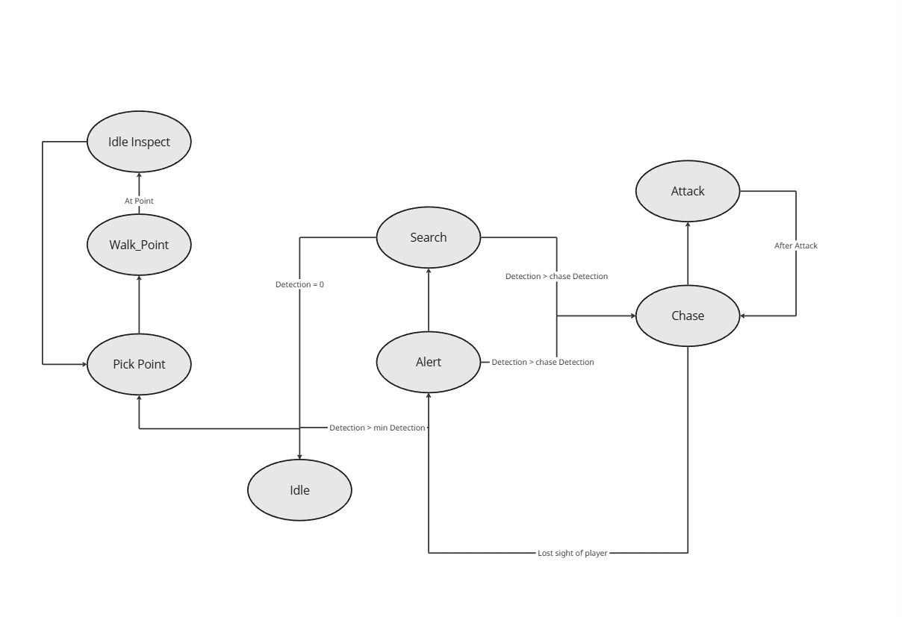
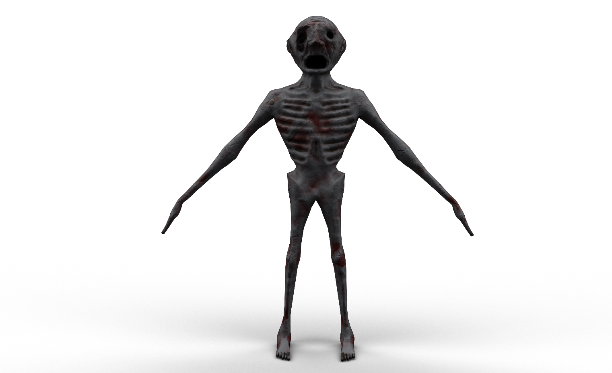
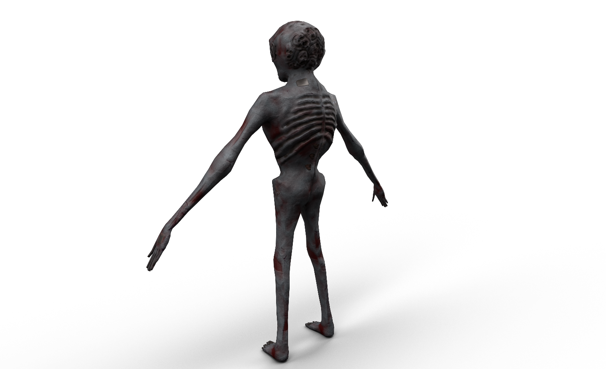
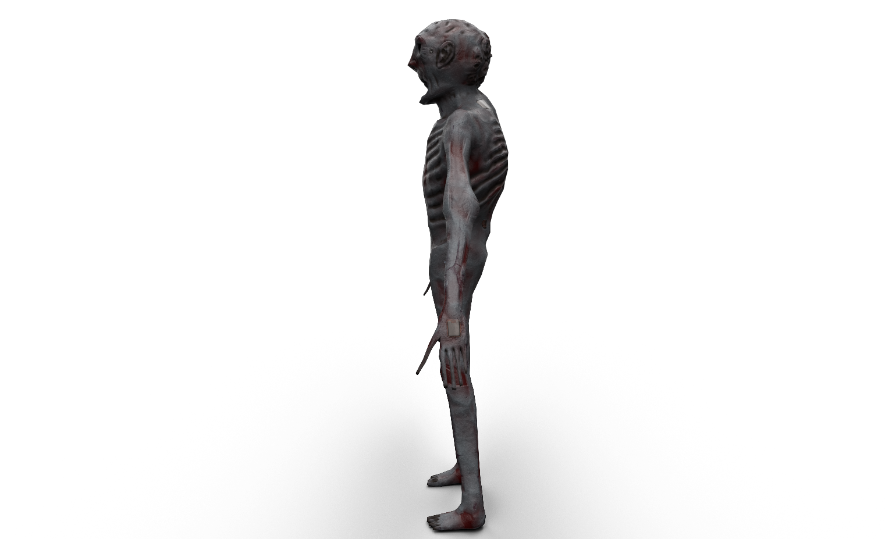
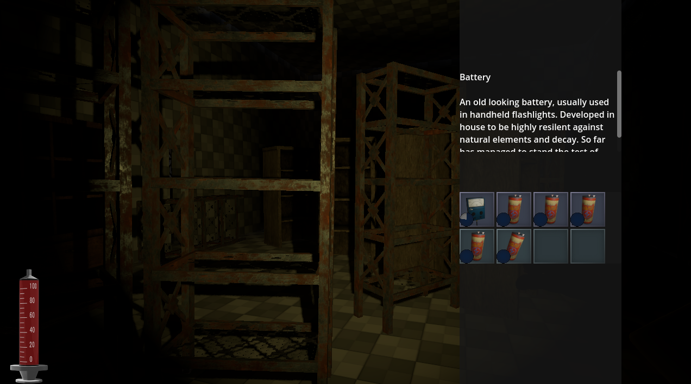
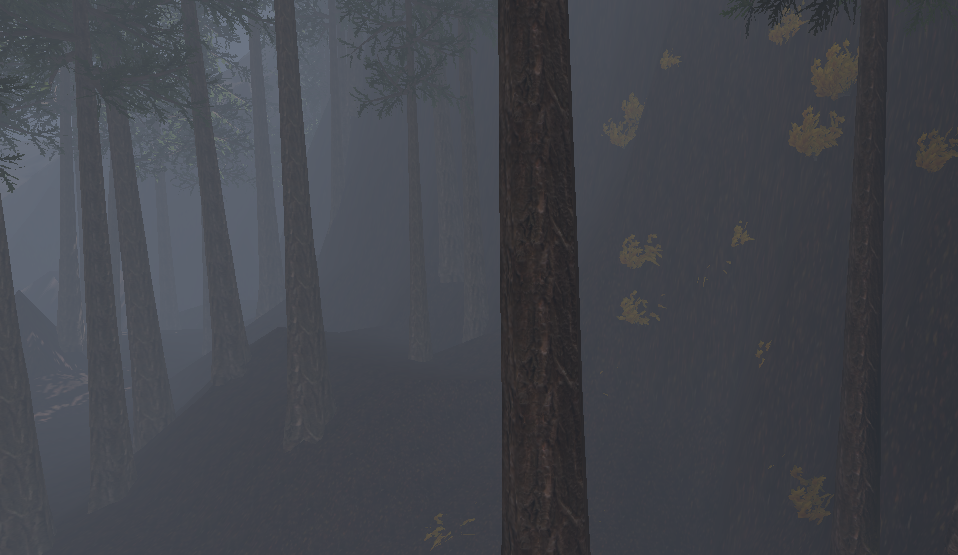

Owen Spreadbury
Paranormal Factory
Patient R-21
Design Week
Paranormal Factory
This is my most major project in Godot Engine. It contains programming, 3D art, design, etc.
It's a narrative based horror game. Placed in an abandoned 1960s office with a secret bunker.
Karl
Of course a horror game wouldn't be nearly as intense without an antagonist. This is Karl, one of the primary enemies of the game.
Karl is a 3D Model created in Blender. I had sculpted, modelled, textured, rigged and animated the entire character. In short, it was my first real experience at putting together a full game ready character.
Karl is an NPC that moves around fixed points inside a level. His primary goal is to create constant danger to the player, making sure that they don't feel safe outside of the designated safe rooms.
AI

Karl's AI has a few states attributed to him. These states are broken into seperate categories.
The main plan was that he would randomly pick particular spots, inspect them, and move to another. Then, if he were to see a player, he would stop and look around. If the player is seen enough, he will come over to investigate. If the player is seen further still, he would chase them until he is close enough to attack.
The only way the player can escape is to stay out of his sight for a long enough period.
While this ai is relatively simple, it adds a layer of tension while exploring the bunker. The player is forced to consider their own survival as they navigate and solve puzzles. This can especially be a handful if the player is busy capturing ghost essence.
Model

 
Inventory

Items are a necessity for this game, therefore an inventory to store these items is required.
The player's inventory is a simple grid with an item in each slot. The player can drop, use or combine items inside the inventory.
Multimesh Vegetation

When creating the forest outside of the building, I needed to be able to create many trees without destroying the game's performance.
Grabbing Objects
A fun mechanic I implemented in the game is the act of grabbing objects physically. Players can grab, rotate and throw objects. This can be used to solve puzzles or for some simple fun with physics.
For this particular puzzle, the player is required to collect a brick and throw it at a shattered window. They need to then pull the lever which opens a door for them to collect an item.